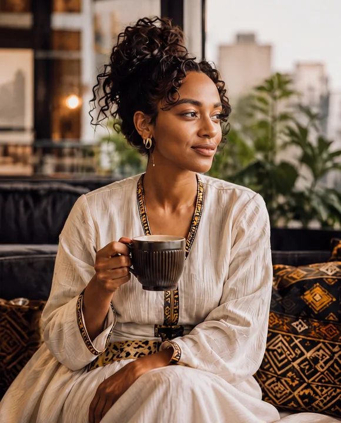

coffee-hero
Coffee hero
Window-lit coffee portrait, curly updo, ivory dress with black and gold trim. Selected by David.
Six reusable people references, refined with Nano Banana Pro through Runway. The approved coffee hero anchors this set. Each person has a stable reference ID, a full-resolution image and a saved prompt for future scenes.

Window-lit coffee portrait, curly updo, ivory dress with black and gold trim. Selected by David.
Seated man working on a laptop in a warm cafe, ivory overshirt, dark shirt, short curls and beard.
Seated woman with a phone, curly updo, ivory woven dress, gold jewelry, city window and woven baskets.
Smiling woman in a green blazer, loose dark hair, small gold jewelry, warm yellow studio backdrop.
Man in a navy polo, short salt-and-pepper curls and beard, soft green studio backdrop.
Smiling older woman in an ivory and gold outfit, silver-streaked dark hair, warm terracotta backdrop.
Choose a reference ID and attach its full-resolution image when making a new artifact. Preserve appearance and apparent age, then describe the new setting, pose and framing. Review the result before adding another approved reference angle.
This library supports still images and future creative work. Runway Characters is a separate choice for a live talking avatar. The website uses small AVIF/WebP derivatives; these large reference files stay outside the production build.